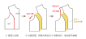

接下來，我們談胸褶。胸褶是前片上極其重要的存在。第一章看過，前片其實做了三根褶子——比較重要的就是這三根：胸褶，還有底下的腰褶 a 跟 b。沒有這三根褶子，衣服的前片不過是一片布；正是把這三個地方抓起來，衣服才會合身、才成為「屬於你」的形狀。
那麼第一個問題：胸褶能不能不剪開、非車不可嗎？不一定。身形平坦時——像第一章說過的，男生的胸部比較平——其實沒有什麼胸褶可以收，因為不需要在胸口製造一個凸起的空間。
這一節主要談「增量」——如何藉著胸褶，把貼身的原型版變寬鬆。動手之前，先回到派對帽。
照第一章派對帽的原理：開口剪在哪裡，都能攤平、也都能收回同一頂帽子。胸褶亦然——它並非非得長在袖襱那邊不可。以 BP（胸點）為中心，360 度哪個方向都可以長。把它移到靠近領子那邊的時候，只需把褶線畫到接近領口的位置，車起來、把它撐起來，身體前面一樣會有那個空間。
那原型版為什麼把它開在袖襱？因為長在那裡比較對稱、靠側邊，恰好能把胸部旁邊的輪廓收貼緊，甚至可以順勢往下連到腰褶 a。說穿了，這是過往經驗的選擇：這樣做起來好看、美觀、對稱，而且藏在側面不顯眼——所以胸褶落在這裡。剩下要不要轉、要轉去哪，就是你的設計了。
不過，也別轉得太暴力。譬如把胸褶跟底下的腰褶 a 直接併在一起——它會成為超大的一根褶子。這樣做的問題是什麼？它不一定雅觀：份量很粗暴地全收在同一個地方，那根褶子看起來就會非常突兀。前面談過褶子為什麼這麼多根，道理正在於要慢慢地「細化」它、把份量分散掉。
順帶一提，打版還有另一條路叫立裁（立體裁剪）：把一片布直接覆在人台上面，慢慢地撥、慢慢把褶子一根一根抓出來。你會發現，抓出來的褶子，位置大抵也就落在原型版畫的那些地方——褶子長在哪裡，是有道理的。
那如果我要增量，應該怎麼做？第一個、也是最簡單的做法是這樣：
